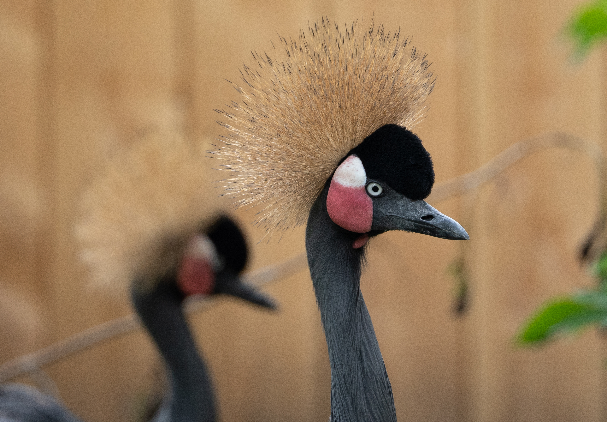
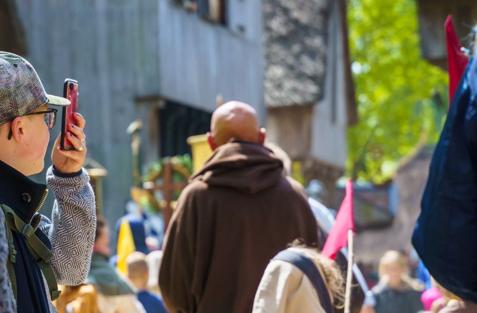

Dit moet je weten over Alphen aan Rijn
- Een gemeente in Zuid-Holland
- Meer dan 100.000 inwoners
- Resten aanwezig van twee Romeinse versterkingen
- Oudtshoorn in Zuid-Afrika is een partnerstad
- Liesbeth Spies is sinds 2014 burgermeester
Avifauna
Vogelpark Avifauna is een dierenpark in Alphen aan den Rijn met de nadruk op vogels. De naam avifauna refereert aan het deel van het dierenrijk (fauna) dat bestaat uit vogels (Aves in het Latijn). Vogelpark Avifauna is het eerste en tevens een van de bekendste vogelparken ter wereld.
Het park heeft veel groen en vijvers, een restaurant, en een grote speeltuin met vanouds de hoogste glijtoren van Nederland. Het park was eigendom van het Van der Valk-concern maar is sinds begin 2012 een stichting. Stichting Vogelpark Avifauna zet zich in voor vogel- en natuurbescherming en heeft een ANBI-status (Algemeen Nut Beogende Instelling). Vanaf het park kunnen ook boottochten gemaakt worden.
Archeon
Museumpark Archeon is een openluchtmuseum en educatief belevingspark in het Zuid-Hollandse Alphen aan den Rijn dat het leven in Nederland tijdens de prehistorie, Romeinse tijd en middeleeuwen laat zien. Het maakt daarbij gebruik van archeologische reconstructies, het naspelen van dagelijkse bezigheden waar bezoekers aan kunnen deelnemen (levende geschiedenis) en het tentoonstellen van originele historische voorwerpen. Het park kreeg in 2015 de museumstatus.
